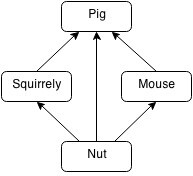

Hint
1. When a Mouse or Squirrely is adjacent to a Pig and a nut at the same time, it will be eaten by the Pig first.
2. At the beginning of the game, it’s guaranteed that you can’t win or fail at once.
3. When being able to eat or be eaten, the animal will stop and finish the eating process.

Sample Explanations
Case #1:
1. roll the Mouse at grid (3, 4) up to grid (1, 4).
2. roll the Mouse at grid (1, 4) left to grid (1, 2).
3. roll Squirrely at grid (6, 4) up to grid (1, 4).
4. roll Squirrely at grid (1, 4) right to grid(1, 7) and he can get the nut.
Case #2:
1. roll the Pig at grid (4, 6) up to grid (3, 6).
2. roll the Pig at grid (3, 6) left to grid (3, 4), why grid (3, 4)? Because it will stop to eat the Mouse at grid (4, 4).
3. roll the Pig at grid (3, 4) up to grid (2, 4), you must roll the Pig to grid (2, 4), otherwise, Squirrely will certainly be eaten by the Pig!
4. just roll Squirrely at grid (4, 2) right to grid (4, 7) and he can get the nut.
Case #3:
1. roll the Mouse at grid (4, 5) down to grid (5, 5), and it is eaten by the Pig, notice that the Mouse at grid(5, 5) can not eat the nut because the Mouse will be eaten by the Pig before it can eat the nut!
2. roll the Mouse at grid (3, 5) down.
3. roll the Mouse at grid (2, 5) down.
4. roll Squirrely at grid (2, 1) right to grid (2, 6).
5. roll Squirrely at grid (2, 6) down to grid (6, 6) and he can get the nut.